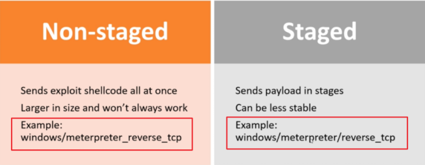

Types of Shellcode
• Local
Shellcode:
◇ Also known as
Privilege Escalation Shellcode ◇ Use an exploit of a local process(on local machine) to inject a Shellcode into the local process and execute it
◇ The goal is get
higher privileges on the local machine
• Remote
Shellcode
◇ Also known as
Remote Code Execution ◇ Use an exploit of a remote process(on remote machine) to send and inject a Shellcode into the remote process and execute it
◇ The goal of RCE have remote
access to the exploited machine
◇ Types of RCE:
▪
Connect Back Shellcode → initiates a connection back to the attacker's machine
▪
Bind Shell Shellcode → binds a shell to a port on which the attacker can connect
▪
Socket Reuse Shellcode → establishes a connection to a vulnerable process that does not close before the shellcode is run. The shellcode can then re-use this connection to communicate with the attacker. However, due to their complexity, they are generally not used
Staged
Shellcode
Used when the shellcode size is bigger than the space that an attacker can use for injection (within the process), so the Shellcode is divided in more parts
Staged shellcode can be
local or
remote and can be divided into two sub-types:
•
Egg-hunt Shellcode:
◇
Stage1 (
egg-hunter): a
small shellcode is executed in the space that the attacker can use for injection. It start searching for the
bigger shellcode (egg) within the process address space.
◇
Stage2 (
egg): a
bigger shellcode can be injected into the process but, it is unknown where in the process this shellcode will be actually injected
•
Omelet Shellcode
◇
Stage1 (
egg-hunter): a
small shellcode is executed in the space that the attacker can use for injection. It start searching for the
smaller shellcodes(eggs) within the process address space.
◇
Stage2 (
eggs):
smaller shellcodes are combined together and executed
Download and execute
Shellcodes
They do not immediately create a shell when executed.
Instead, they download an executable file from the Internet, execute it and create a Shellcode.